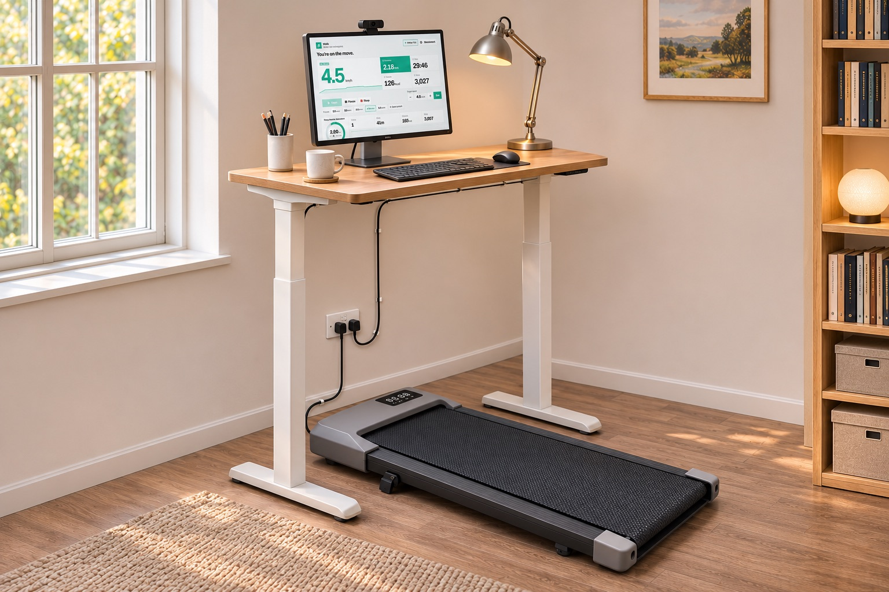
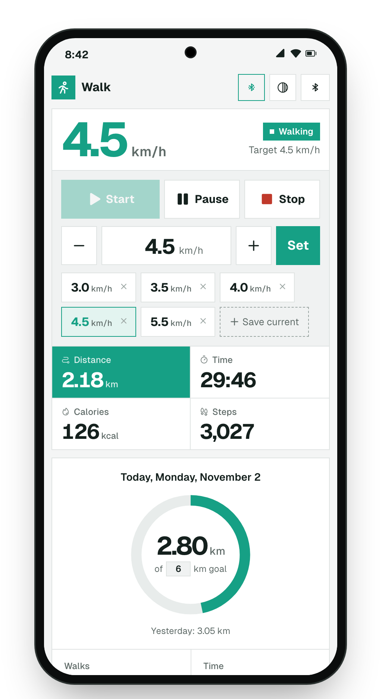
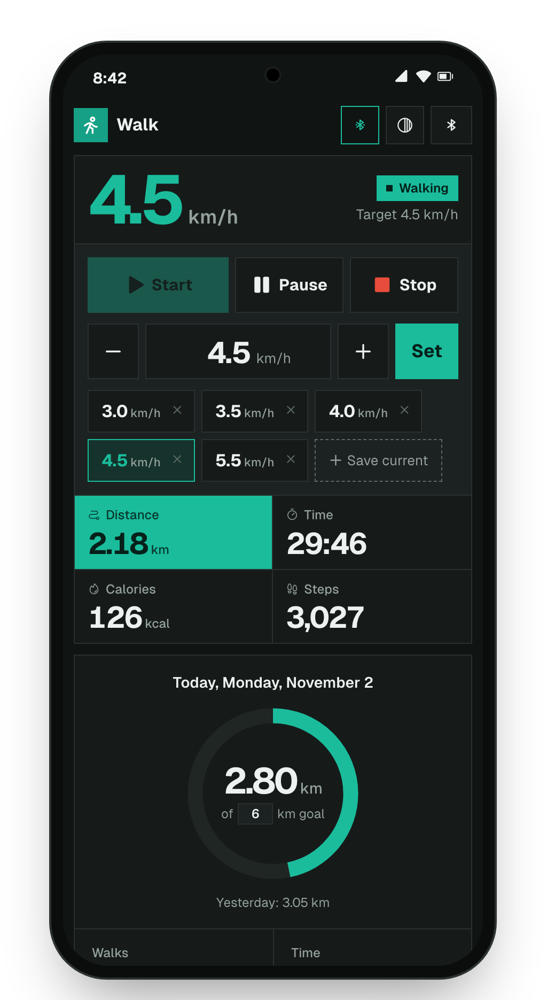
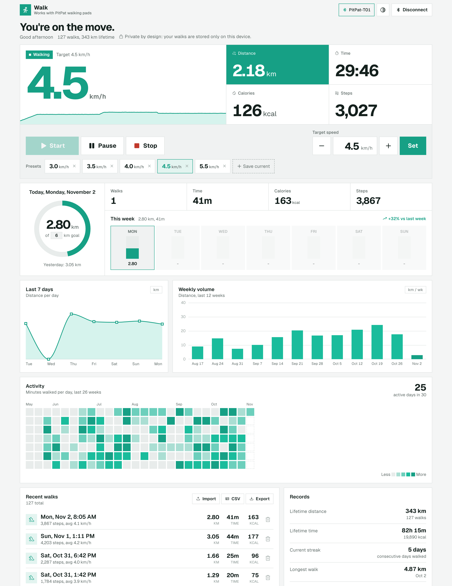
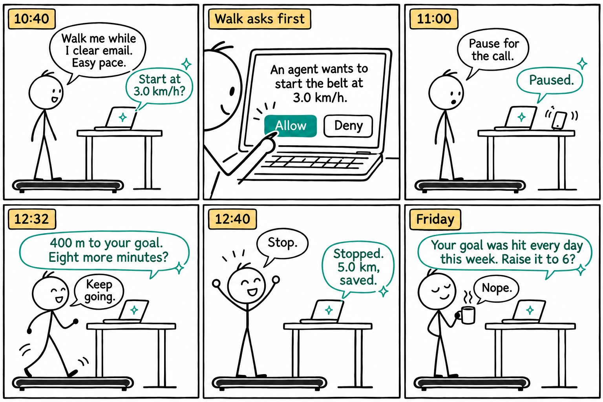

Your Superun or DeerRun walking pad, without the PitPat app.
Walk is a free web page that runs your Superun, DeerRun or other PitPat walking pad from the browser. Big Start, Pause and Stop buttons, an exact speed, and every walk counted. No app to install, no account, and your walks never leave your device.
- No app to install
- No account
- Free and open source

Why use Walk instead of the PitPat app
- No app to installNothing from the app store, nothing on your phone. Open the page, connect your Superun or DeerRun pad, and walk. Keep the PitPat app closed, or delete it.
- Private by designYour walks stay on your device. No account, no server, no analytics. Export a backup or a spreadsheet anytime.
- Controls firstBig buttons, an exact speed, one-tap presets and keyboard shortcuts.
- Every step countedSpeed, distance, time, steps and calories, kept through pauses and dropped connections.
- See your progressA daily goal, your week, weekly trends, an activity calendar and records.
- Free and open sourceNo ads, no subscription, no catch. The code is public, so anyone can check what it does.



How to connect your Superun or DeerRun walking pad
- Turn on the pad and close the PitPat app on your phone. The pad connects to one device at a time.
- Open Walk in Chrome, Edge or Opera, and press Connect.
- Pick your pad from the list.
- Press Start or tap a preset speed. Keyboard: Space start or pause, ↑↓ speed, Esc stop.
Will it work with my Superun or DeerRun walking pad?
Works with
- Superun and DeerRun walking pads, and other pads that use the PitPat app
- Tested on a PitPat-T01 pad
- Chrome, Edge or Opera on Windows, macOS, Linux, ChromeOS or Android
Not supported
- iPhone and iPad, in any browser
- Safari and Firefox
- Pads that use a different app (for example KingSmith WalkingPad)
Those browsers don't let websites use Bluetooth. If your pad uses the PitPat app and doesn't show up, tell me.
Superun, DeerRun and PitPat: how they fit together
Superun and DeerRun sell under-desk walking pads that pair with PitPat, a phone app for treadmills. The pads often come with a small remote, but many owners find they need the PitPat app to set up the pad, track walks, or control it when the remote goes missing.
Walk speaks the same Bluetooth language as the PitPat app, so it can control these pads directly from a web page. You don't need to install the PitPat app, create an account, or keep your phone nearby. Your walks are saved in your browser, and you can export them anytime.
Walk with an AI agent
Walk supports WebMCP, a new browser standard that lets a page offer its controls to an AI assistant in the same browser. Ask it how your week went, to pause for a call, or to pick up the pace. Pause and stop always work right away. Starting the belt is your call: the assistant asks you first, unless you choose to let it start on its own. Chrome only, for now.

Questions
Can I use my Superun or DeerRun walking pad without the PitPat app?
Yes. Walk talks to the pad directly over Bluetooth, the same way the PitPat app does. Keep the PitPat app closed while you use Walk, because the pad connects to one device at a time.
Is Walk really free? What's the catch?
It's free and open source, in the public domain. It's a hobby project: no ads, no subscription, no account and nothing collected.
Where are my walks stored?
In your browser, on this device only. Clearing the site's data deletes them, so use Export now and then. Import brings a backup back, here or on another computer.
Can I control my Superun or DeerRun walking pad from my phone?
On Android, yes, in Chrome. On iPhone, no: Apple doesn't let websites use Bluetooth.
Walk doesn't find my Superun or DeerRun pad.
Close the PitPat app (or turn off Bluetooth on the phone that runs it), make sure the pad is on, and press Connect again. Walk reconnects by itself after brief drops.
Does it count steps on a Superun or DeerRun walking pad?
Yes, when the pad reports them. Distance, time and calories come from the pad too.
Stay safe
Walk controls moving equipment. Keep the pad's remote within reach, and step off before starting or changing speed while you test. Use at your own risk.
Who made this
I'm Omri Lotan. I wanted to walk at my desk without a phone app in the way, so I built Walk. It stands on the protocol work of PitPat-WebBT, pitpat-treadmill and pacekeeper. The code is on GitHub.